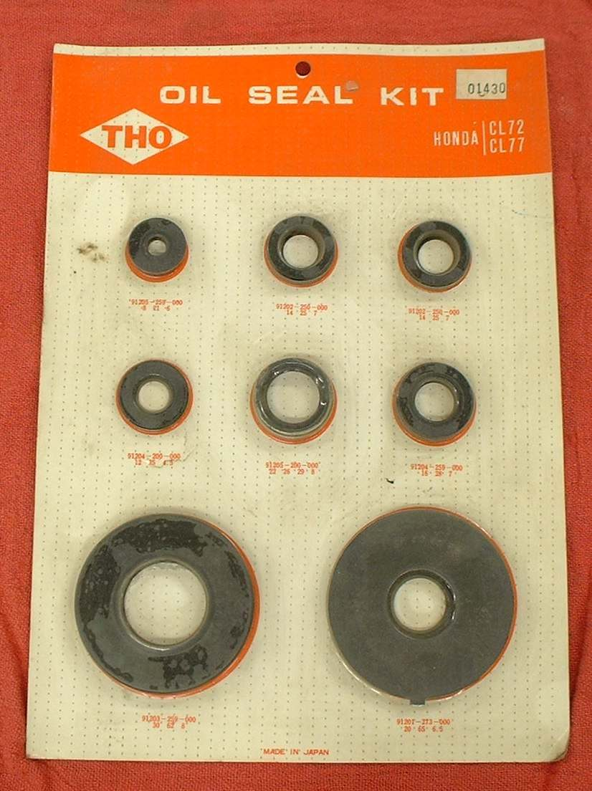
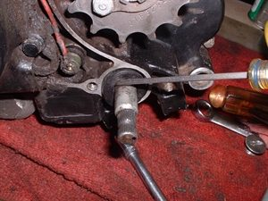

A puddle or drips under a parked bike is a start point, not a diagnosis. First decide what the liquid is and roughly where it comes from, then trace it to the highest wet point. Many leaks are simple: a drain plug washer, a loose cover screw, an overfilled engine or a breather pipe. Others, such as a head gasket, need a workshop. The K-Light schedule asks for oil leaks to be checked at every service.
Is it safe to ride?
Yes with care if the oil level is above the lower mark and no oil reaches the tyre or brakes. Do not ride if oil is running, if the level is below the mark, or if oil is on the rear tyre or brake.
Quick checks first
- Check the oil level now.
- Look at the drips on white paper: colour, smell, feel.
- Note where the drops land: front, middle, rear of the engine, or at a wheel.
- Is the rear tyre or brake disc wet?
Diagnose it step by step
1What is the liquid?
- Brown or black and oily, smells of oil: engine or gear oil. Go to step 2.
- Clear to yellow, thin and slippery near a brake: brake fluid. Go to Brake fluid is leaking and do not ride.
- Smells of petrol and evaporates: Fuel is leaking or dripping.
- Coloured and sweet smelling: Coolant is leaking.
- Oil from a fork leg or rear shock: Oil leaking from a fork leg or Oil leaking from a rear shock.
- Scooter, from the rear gear case: Oil leaking from the scooter rear gear case.
2Is the engine oil above the upper mark? Check with Check the engine oil level.
- Yes: drain to the correct level. Overfilling pushes oil out of seals and the breather. See Too much oil in the engine.
- No: go to step 3.
3Clean the engine and find the source with Trace an oil leak. Where is the highest wet point?
- Drain plug: Oil leaking from the drain plug.
- Left or right engine cover: Oil leaking from an engine side cover.
- Joint between head and cylinder, or cylinder and crankcase: Oil leaking from the cylinder head or base gasket.
- Behind the front sprocket: Oil leaking behind the front sprocket.
- Breather hose or air box drain: go to step 4.
4Is oil coming from the breather hose or the air box drain?
- Yes: check with Check the crankcase breather. Heavy oil here can mean worn rings.
- No: recheck with powder after a short ride.
What happens if you ignore it: the level falls until the engine is damaged, and oil on the rear tyre causes falls.
Causes, most likely first
| Cause | How to confirm | Fix |
|---|---|---|
| Overfilled engine | Level above upper mark | Check the engine oil level |
| Drain plug washer or loose plug | Wet only at plug | Replace the drain plug sealing washer |
| Cover gasket or loose screws | Wet line at cover joint | Replace an engine cover gasket |
| Output shaft seal | Oil behind sprocket, chain oily | Replace the output shaft seal |
| Breather blocked or overfilling | Oil at breather | Check the crankcase breather |
| Head or base gasket | Wet at cylinder joints | Trace an oil leak |